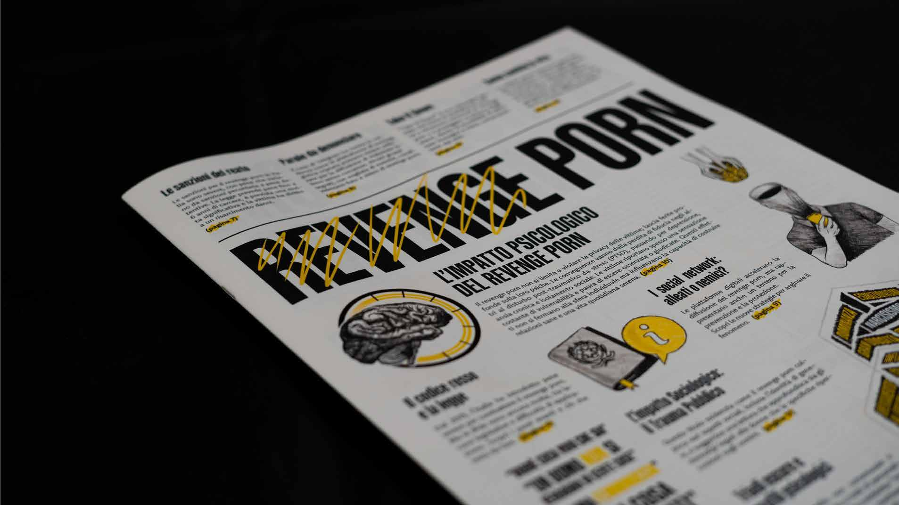
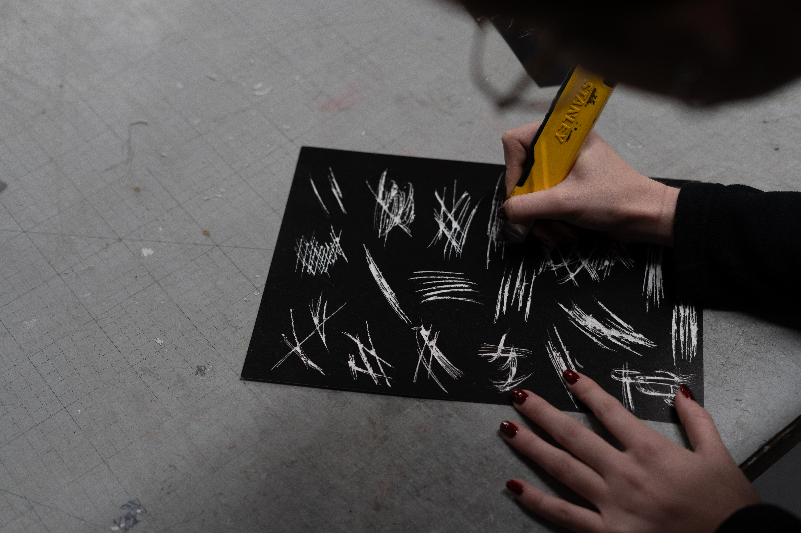
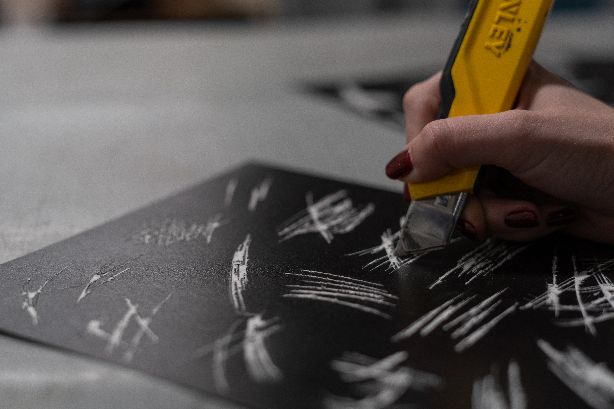
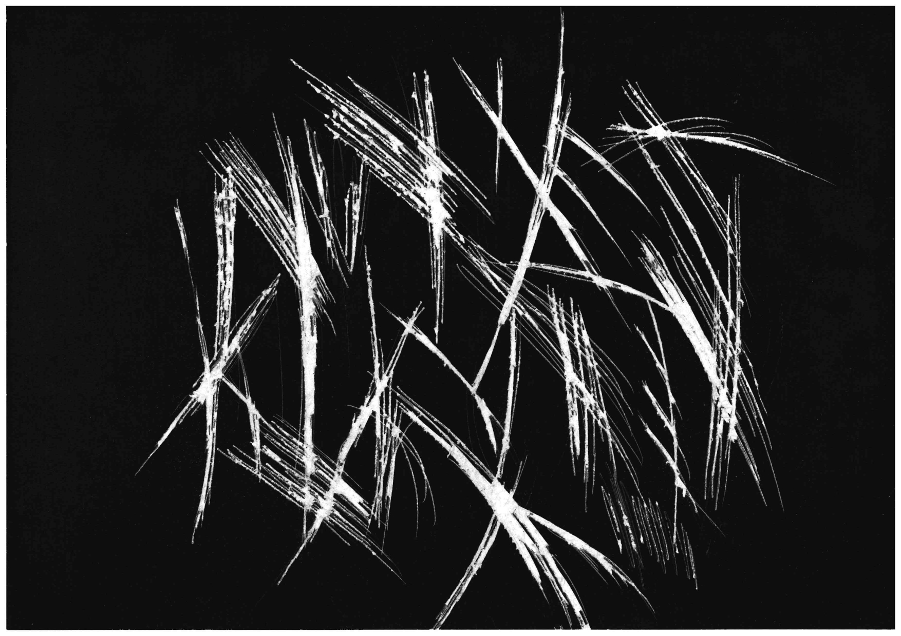
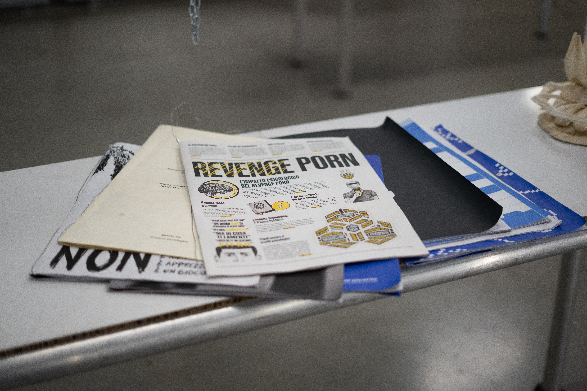
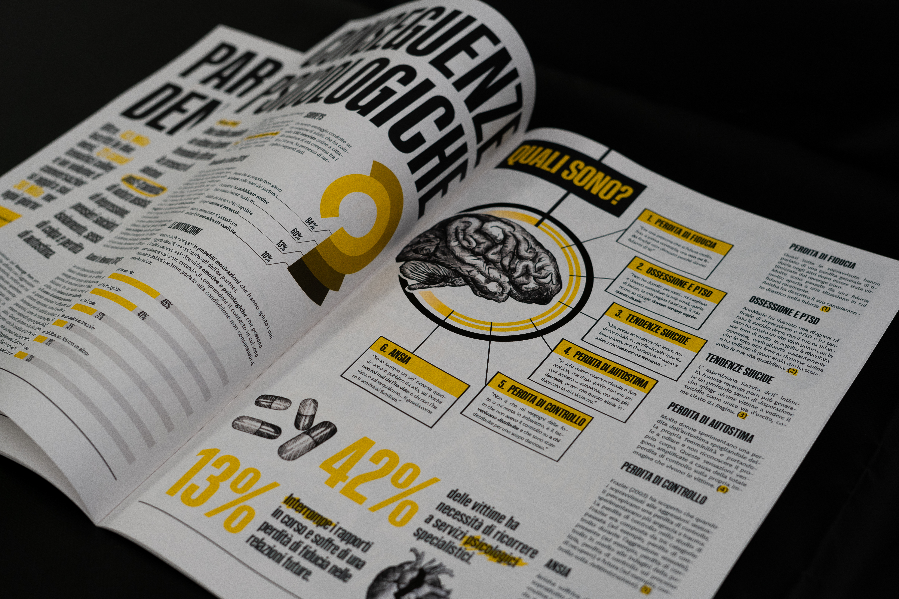
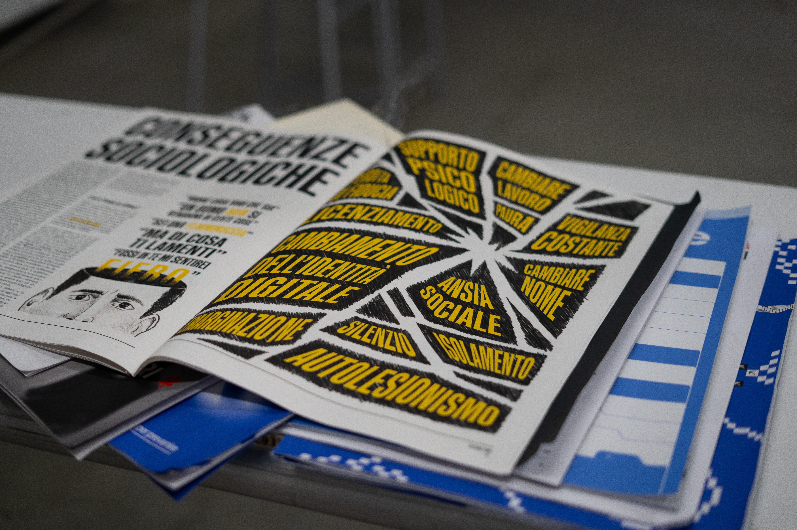

Ogni click è un taglio
CONCEPT
This project is an awareness campaign aimed at the student community of the Politecnico, with the goal of raising awareness about the issue of revenge porn. The main objective is to highlight the consequences of this act and challenge the often superficial way it is treated.
The posters were created first, serving as the observer’s initial encounter with the topic. Each poster highlights a different aspect of the consequences: mental health, family relationships, social life, and is accompanied by informational copy that I personally curated.
“How can we raise awareness
without endangering privacy?”




To make the aspect of violence tangible, I proposed and developed a visual style based on real cuts and physical scratches, later digitized, which layer over the figure of the victim as a metaphor for the impact that non-consensual sharing has on the life of those affected.
Then we created an informative editorial, consisting of 16 pages designed to explore the topic of revenge porn from legal, statistical, psychological and social perspectives, that was approached like a “newspaper”. Through graphic element and dedicated spaces it was possible to produce a piece that examines the phenomenon from a comprehensive viewpoint.


